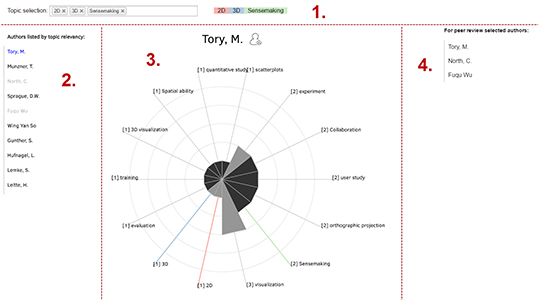

Topic Explorer - A tool to support selecting peer review candidates
This tool will allow to search for peer review candidates in the field of Information Visualisation.
You can explore and find over hundreds of researcher and papers based on topics.
How to use

The tool is divided in 4 main parts:
- Search for one or more topics the peer reviewer should have knowledge of.
- The list will propose authors with best matches in regards to the topics.
The sorting is done by how many papers the author wrote in regards to the selected topics.
The authors are sorted from top (best) to bottom (less good).
- Drag an author to the middle part to see the topics he wrote about.
Each triangle represents a topic. The size indicates how many times the author wrote about it.
The darkness in the triangle show the time range of the last published paper:
2015 - 2010
2010 - 2000
2000 - 1990
Through holding SHIFT and scrolling you can increase or decrease the amount of topics shown.
Hover over a topic to see the published papers from the author regarding this topic.
- If you like an author then click on the icon next to the authors name to add him as peer reviewer.
For peer review selected authors: